見学・入門
道具について
弓道の用具は、弓と矢、弦（つる）、弽（ゆがけ）、弓道着や袴など。完全に均一化されていないので、ひとり一人が固有の用具を準備して、管理することが必要です。また、初心者が学ぶ場合は、学校や道場で借りられることもあります。練習も試合も、安全に気をつけるため、また、用具の機能を十分に発揮するためにも、個人がさまざまに工夫し、愛着を持って手入れ・保管することが重要です。用具を大切にすることが、伝統的な弓道を理解することにつながるともいえるのです。
弓
-
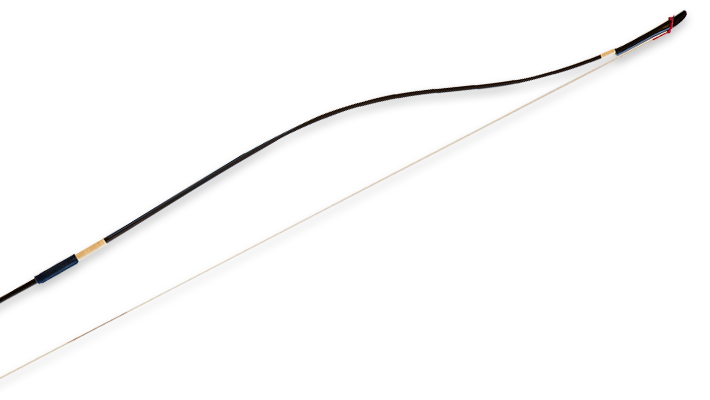
弓の長さは221cm（7尺3寸）が基準。
射手（いて：弓を引く人）の身長または競技の種類により若干の長短が認められます。
＊3寸詰まり：約9cm短、4寸伸び：約12cm伸び
握りの位置は弓の上部から約3分の2の所で、矢摺籐（やすりとう）の長さは6cm以上。
＊矢摺籐：握りの上に巻く、段々細くなる加工を施した籐のことで、長さは弓１張り分
弓に照準のための装置や目印を付けたり、類似のことをしてはなりません。
弓は使い方によって変形したり、外竹が破損しやすいので、管理や保管だけでなく、持ち運びもていねいに扱うことが大切です。
弓は矢を番（つが）えずに矢束の近くまで引き、そのまま離すと破損することがあります。
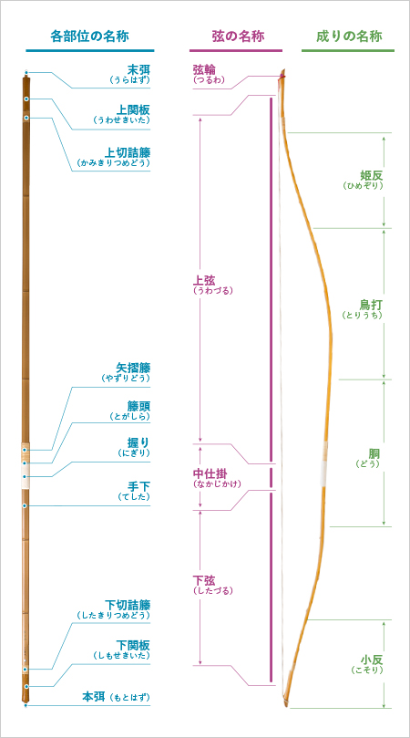
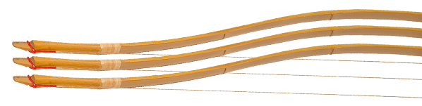
弓の一般的な張り方
弓の受板に末弭（うらはず）をあて、本弭を下にして、左手を弓の握りのあたりに向けて張り、右手で本弭を上に引き上げ、本弭の少し上のあたりを腿の上部にかけ、右手で弦を取り本弭にかけます。
竹弓は特に弓の形が落ち着くまで待つべきなので、練習や試合の初めにはまず、弓を張ってから、他の準備をするべきです。
弓を張る受板がない場所では、壁や床で張ってはいけません。その場合は、二人一組で肩、両手で末弭の部分を受けてもらって張ります。
弓の強さは、弓を引いた時の負荷をkgで表示。個人に適する弓の強さは、各自が肩入れできる弓の強さの1/2が標準です。初心のうちは1/3から1/4くらいを目安にします。
矢
-
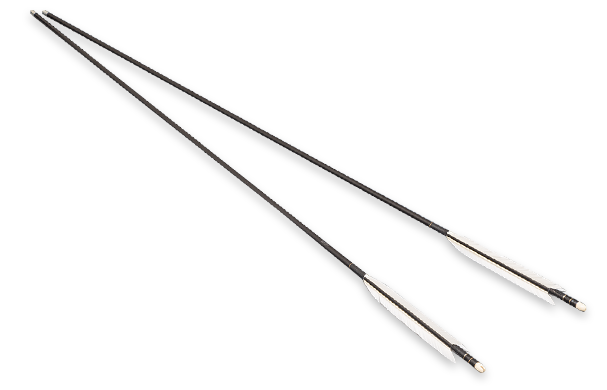
自分の引く矢束（やづか：矢の長さ）より5cm以上長い矢を選びます。
＊自分の喉もとからまっすぐに伸ばした左腕の、中指の指先までに指3本の長さ以上をプラスした長さ。初心者で射型が定まらない間は、10cm位長い矢が適当です。
1組4本（試合では予備矢、2本が必要）。巻藁矢一本を用意して始めましょう。
弓道の事故は少ないのですが、あるとすれば矢に関係するものがほとんどです。
危険防止上、的前では次の矢は絶対使用禁止です。
- 矢束より短い矢、または矢束いっぱいの矢
- 羽のついてない矢（巻藁用の矢、破損して一枚でも羽のとれた矢）
- 箆（の：棒の部分）が割れた矢、または箆が折れた矢
- 板付（いたつき：矢鏃（やじり）のとれた矢）
＊人のいる方に向かって矢番えをしたり、万が一にも打起こしをすることは、絶対禁止。
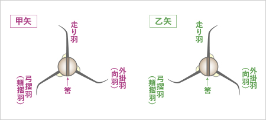
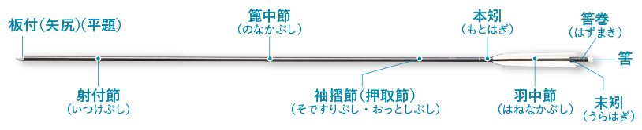
弦（つる）
-
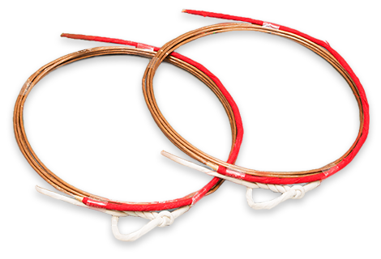
弓の長さに合わせて、弦にも長短があります。切れることを予測して必ず、予備の弦を作り、何射か引いてから、弦巻に用意します。
弦に矢を番える部分を中仕掛け（なかじかけ：中関）といいます。
中仕掛けの作り方
＊「まぐすね」で麻弦を良く摩擦し、くすねを弦に良くしみこませて
＊15cm位の麻で、矢番えの位置から1～1.5cm上部に作ります
＊最後に「道宝（どうほう）」を使い、良く締めつけます。握りに対して矢番えの位置が低いと左手（弓手）の親指を負傷する原因になるので、気をつけて。中仕掛けが筈に対して太過ぎても細過ぎても矢を射る時に失敗しやすいです。
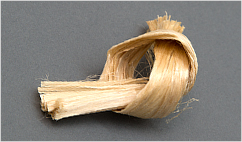
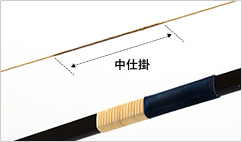
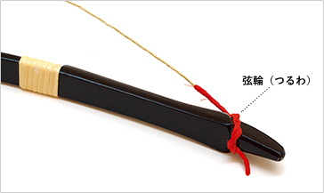
弦輪（つるわ）
弦輪は一重結びと二重結びの２種類。弦輪をたびたび修正すると弦が切れやすくなるので、気をつけましょう。末弭に対して弦輪が小さ過ぎると弦は切れやすく、弦輪が大き過ぎると不安定なので弓のために良くありません。
弽（ゆがけ）
-
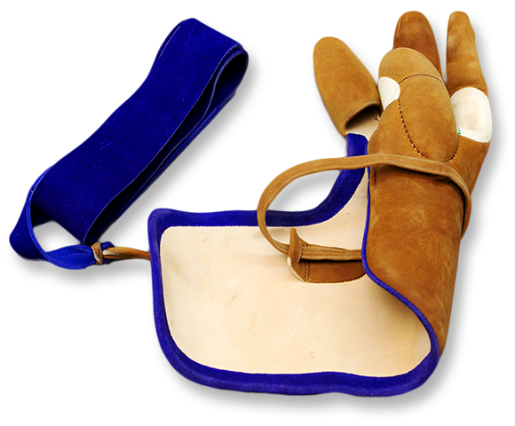
弽は鹿革製。親指の堅いもの、柔らかいもの、指3本の三つ弽、指4本の四つ弽、指5本の諸弽などがあります。
使用する時は汗から守るために「したがけ」（木綿製）を必ず付けます。湿気に弱いので保管にも注意が必要。そして、弽を付ける時は必ず跪座か正座をして行うのが決まりです。
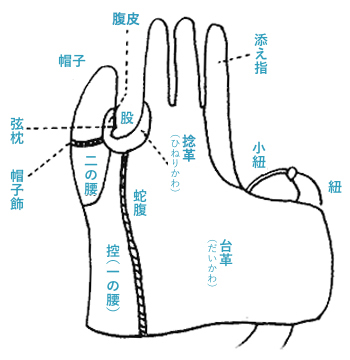
巻藁（まきわら）
-
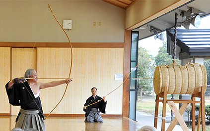
弓道、弓術の型を稽古するための的。藁で矢が突き抜けない長さ、矢をいためない程度の強さで束ねて、適当な高さの台に乗せたものです。的前の稽古とあわせて巻藁の稽古も大切です。
巻藁では、必ず弓一杖（弓1張の長さ、約2m）の距離を保ち、それ以上遠くから、また、それより近くからも行射してはいけません。巻藁と正対するように足踏みをし、矢の着点は自分の唇の高さ付近に集中することが大切。巻藁用の矢には羽が付いていないものが多いので、危険防止のためにも特に注意が必要です。
稽古用の巻藁の大きさは直径45cm～54cmのものが理想。巻藁の後ろに矢止め用の畳や板などを置く必要があります。練習の初期は、畳を巻藁代わりに使うこともあります。射込んだ矢を抜く時は、矢筈などが周囲の人に触れぬよう注意が必要です。
ゴム弓（ゴムきゅう）
-
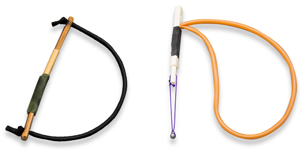
射法・射型の稽古用に利用するのに最適。引く時は、ゴムを必ず外回りにして引きます。
弓道衣、袴、足袋、帯
-
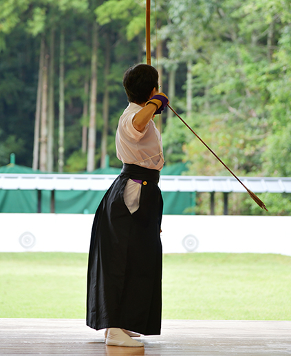
原則として弓道衣（白筒袖）と袴、白足袋を身に付けます。初心者や学校の授業などでは動きやすく清潔な運動着を着ます。
＊左胸にポケット、前にボタンがある上着は不適当。「離れ：矢が弓から離れる瞬間」に弦で払う心配があるからです。女子は「胸当て」を用意して、胸の右上から左脇下に付けてください。